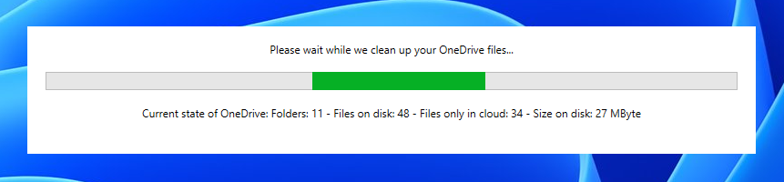
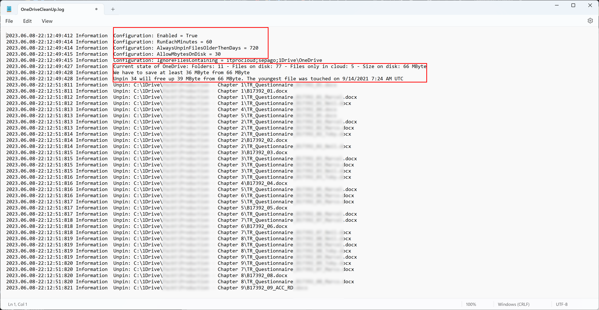

OneDrive Clean-Up for Azure Virtual Desktop
Running OneDrive with Azure Virtual Desktop is a common scenario and enables users to work in a modern way with Teams and SharePoint. If FSLogix is used, there is a challenge in combination with OneDrive: Users can download OneDrive files to the host, and the data are stored in the profile. The profile size increases heavily and causes some extra costs on the storage account.
Having so many OneDrive files stored in the profile may make no sense in every case - if a user access a file, the file is downloaded automatically (on demand). And it’s mostly fine to “unpin” the file later if the file is no longer needed. The files are downloaded fast, while AVD and OneDrive are in the Microsoft cloud.
Background: 
OneDrive files can have three different states:
- Cloud: The file content is in the cloud only. The file system simulates that the file exists. While the content is not on the disk, the files don’t need storage on the device. If a user opens such a file, the content is downloaded, and the file state change to On-Device.
- On-Device: The file content is also on the local disk, and the files are using local storage.
- Always: The file content is also on the local disk, and the files are using local storage. OneDrive wouldn’t change the state to “Cloud”.
OneDrive can change the state to “Cloud” on normal Windows 10/11 devices using storage sense. Based on the implementation of storage sense, this is not working for Azure Virtual Desktop (Multi-Session) with FSLogix profiles.
A solution to avoid profile blotting in combination with FSLogix is changing the state of OneDrive files to “Cloud” (unpin files). If files are unpinned, they are no longer using local storage, and the “Disk Compaction” of FSLogix would reduce the profile automatically over time (or have more space left for user data).
I built a small tool to solve this challenge (I didn’t find a native solution). The tool is called OneDrive CleanUp. OneDrive CleanUp can run in two ways:
- Started automatically with the login of the user (after the installation, it creates a link in the start-up folder of the start menu). It directly starts in the background and validates and maybe unpin OneDrive files. This process is repeated every 30 minutes and during the logoff of the user.
- Start the program with the parameter /RunOnce during the logoff using a (group) policy.
I prefer the first method to ensure that OneDrive has time to react to the unpinning of files.
Example for method 2:

Result
In my test, my profile grew to 8 GByte while I pinned some files in OneDrive, and after logoff, the profile went back to 800 MByte while the tool unpinned the OneDrive files.
Logging and configuration
The default configuration can be changed by setting the following values to the registry HKLM:\SOFTWARE\ITProCloud\OneDriveCleanUp
| Key | Type | Value | Default value |
|---|---|---|---|
| Enabled | Reg_DWORD | If false, the application will not check the files | 1=true |
| RunEachMinutes | Reg_DWORD | Check OneDrive files each minutes | 30 |
| AlwaysUnpinFilesOlderThenDays | Reg_DWORD | Unpin files older then days (0: disabled ) | 0 |
| AllowMbytesOnDisk | Reg_DWORD | Allow the configured value in MByte on the local disk | 5120 |
| IgnoreFilesContaining | Reg_SZ | String with separated values (;). If the path of a file contains one of the values, the file is ignored | Empty |
OneDrive CleanUp writes a log file to %AppData%\ITProCloud\OneDriveCleanUp.log.
Example:

How does it work
OneDrive CleanUp regularly checks all OneDrive paths and calculates the size of the disk. If the size is larger than the configured maximum size (AllowMbytesOnDisk), it unpins files to go under the configured size. It starts from the oldest to the newest file based on the LastAccessTime property.
Release notes
| Release | Date | Changes & Notes |
|---|---|---|
| 1.0.4 | 2023-05-04 | Initial |
| 1.0.5 | 2023-07-13 | Fix: Files larger than 2 GByte were counted wrong |
| 1.0.6 | 2023-10-17 | Fix: Files larger than 4 GByte were counted wrong |
Download
 Download the latest release from 10/17/2023
Download the latest release from 10/17/2023
Please feel free to send me ideas for improvements.